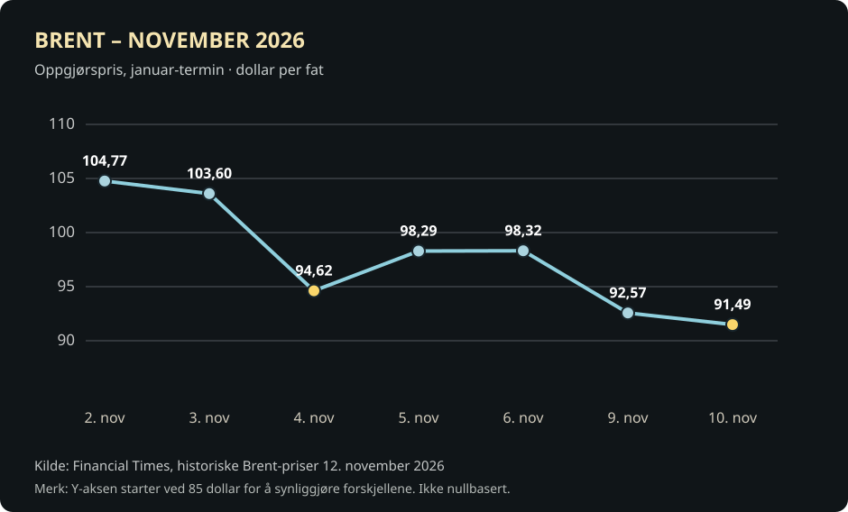
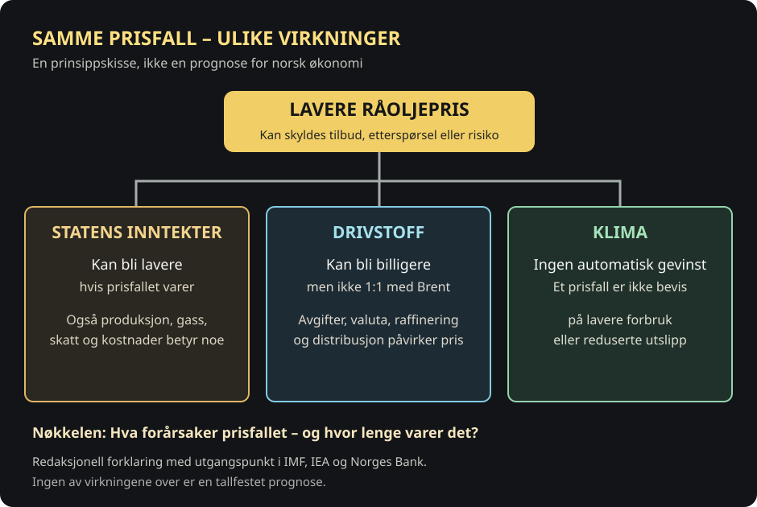

Oppdatert 12. november: prisfallet må leses som et forløp
Oljeprisen fortsatte nedgangen tirsdag 10. november. Klokken 13.34 GMT var Brent-olje notert til 89,65 dollar fatet, ned 3,15 prosent på dagen, ifølge Reuters. Det var første gang siden 31. august at referanseprisen falt under 90 dollar. Dette er en tidsfestet notering, ikke sluttkursen for handelsdagen. Sluttkursen 10. november var 91,49 dollar, ifølge Reuters. Det er denne sluttkursen vi bruker i grafen nedenfor. [8]
Prisfallet kom etter signaler fra USAs president Donald Trump om at nye angrep mot Iran ikke var nært forestående. Mindre frykt for forstyrrelser i oljetransporten kan senke risikopremien i markedet. Samtidig peker analytikere på utsikter til større tilbud enn etterspørsel. Spenningen ved Hormuzstredet er likevel ikke borte, og prisutviklingen kan snu. [8]
For Norge understreker fallet artikkelens hovedspørsmål: Lavere priser kan lette kostnadspresset for noen kjøpere, men svekke framtidige petroleumsinntekter dersom nedgangen varer. Prisfallet alene sier ikke om verdens oljeetterspørsel eller klimagassutslipp faktisk er på vei ned.
Kilder: Reuters, notering kl. 13.34 GMT · Reuters, sluttkurs 10. november. Grafen viser oppgjørspriser for januar-kontrakten og må ikke forstås som en prognose.
Sju sluttkurser viser hvor raskt oljeprisen endret seg


Vis datagrunnlaget i tabell
| Dato | Dollar per fat |
|---|---|
| 2. nov 2026 | 104,77 |
| 3. nov 2026 | 103,60 |
| 4. nov 2026 | 94,62 |
| 5. nov 2026 | 98,29 |
| 6. nov 2026 | 98,32 |
| 9. nov 2026 | 92,57 |
| 10. nov 2026 | 91,49 |
Et kraftig fall i energimarkedet
Onsdag 4. november falt prisen på Brent-olje med 8,7 prosent til 94,62 dollar fatet. Amerikansk WTI-olje falt 8,3 prosent til 88,12 dollar. Ifølge Reuters var dette de laveste nivåene siden slutten av august. [1]
Prisbevegelsen kom etter at Demokratene vant kontroll over begge kamrene i den amerikanske Kongressen. Investorer tolket resultatet som en mulig begrensning på president Donald Trumps handlingsrom i krigen mot Iran. [1] [2]
Forventninger er ikke fred
Uro rundt oljetransporten gjennom Hormuzstredet har bidratt til høyere risikopremier i energimarkedet. Hvis faren for forstyrrelser avtar, kan denne premien synke. Derfor kan bare forventninger om nye forhandlinger påvirke oljeprisen før en avtale er på plass. [1]
Men situasjonen er usikker. Reuters viser til analytikere som advarer om at sammenbrudd i forhandlingene eller ny militær opptrapping kan føre til nye prisøkninger. Et dagsfall er derfor ikke en sikker prognose for resten av året. [1]
Norge påvirkes fra flere kanter
Som stor eksportør av olje og gass får Norge inntekter fra energiproduksjonen. Vedvarende lavere oljepriser kan redusere lønnsomheten for produsentene og statens petroleuminntekter sammenlignet med et scenario med høyere priser.
Samtidig kan lavere råoljepris være en fordel for oljeimporterende land. For norsk økonomi er bildet mer sammensatt: valutakurs, investeringer og etterspørsel etter eksport påvirkes av mange andre forhold enn oljepris alene.
Tre ulike virkninger av lavere oljepris


Hvorfor bensinprisen ikke faller like mye
Råolje er bare én del av prisen ved pumpen. Raffinering, distribusjon, avgifter, konkurranse og valutakurs påvirker hva norske bilister betaler. Et fall på nesten ni prosent i Brent-prisen innebærer derfor ikke et tilsvarende kutt i bensin- og dieselprisen.
Lavere energipriser kan også dempe prispresset internasjonalt. Men hvis den norske kronen svekkes, kan dyrere import trekke motsatt vei.
Hvorfor faller oljeprisen?
De samme lavere prisene kan komme av ulike årsaker. Klikk for å se hvorfor det er avgjørende for Norge og klimaet.
Redaksjonell modell basert på Reuters 10. november, IMF og IEA.
Hvorfor har ikke oljeprisen og bensinprisen samme prosentfall?
Brent er prisen på råolje levert som en internasjonal finanskontrakt. Bensin ved pumpen har i tillegg avgifter, raffinering, distribusjon og lokale marginer. Kronens verdi mot dollar betyr også noe.
Et fall på 8,7 prosent i Brent er derfor ikke en dokumentasjon på at norsk bensin skal falle 8,7 prosent. Det krever egne pumpestasjondata som denne artikkelen ikke har. Denne boksen er en forklaring, ikke en beregning av norske literpriser.
Kan billigere olje være bra for klimaet?
Et fall i oljeprisen har ingen entydig klimaeffekt. For å forstå virkningen må vi først skille mellom lavere etterspørsel og økt tilbud eller lavere risikopremie. Det er årsaken til prisfallet, ikke selve prisbevegelsen, som gir den viktigste informasjonen om framtidig oljeforbruk.
Dersom stadig flere velger elektrisk transport, energieffektive løsninger og alternativer til olje, kan etterspørselen etter petroleum synke. Da kan også oljeprisen falle. Mindre fossil forbrenning kan gi lavere klimagassutslipp over tid. IEA anslår at den globale elbilparken allerede fortrengte omkring 1,7 millioner fat olje om dagen i 2025. [7]
Men oljeprisen kan også falle fordi produsentene tilbyr mer olje, eller fordi frykten for et leveranseavbrudd avtar. Det betyr ikke at verden bruker mindre olje. Vedvarende billigere bensin og diesel kan tvert imot svekke det økonomiske insentivet til å kjøpe elbil, særlig i land med lave drivstoffavgifter. IEA påpeker at virkningen er mindre i områder med høye drivstoffavgifter, og at elbiler fortsatt kan ha lavere driftskostnader. [5]
Lav oljepris kan dessuten gjøre noen nye, kostbare oljeprosjekter mindre lønnsomme. Høy oljepris kan på sin side både redusere forbruket og gjøre ny oljeutvinning mer attraktiv. Derfor er sammenhengen mellom pris og klima langt mer komplisert enn en enkel opp- eller nedpil.
For klimaet er målet ikke billigst mulig olje, men mindre avhengighet av olje og varig lavere utslipp. I den aktuelle markedsreaksjonen etter USA-valget var en viktig faktor forventninger om lavere geopolitisk risiko. Det er i seg selv ingen dokumentasjon på at verdens oljeforbruk har falt.
Norges Bank holdt renten på 4,5 prosent
Norges Bank offentliggjorde torsdag 5. november at styringsrenten blir holdt uendret på 4,50 prosent. Beslutningen ble fattet på møtet 4. november. Renten ble sist hevet i september. Sentralbanken understreker at den må holde prisveksten under kontroll, og åpner for videre innstramming dersom inflasjonen blir værende for høy. [3] [6]
Primærkilde: Norges Bank, rentebeslutning 4. november, publisert 5. november 2026. Den varslet ingen nye prognoser denne gangen.
Oljeprisfall kan dempe globale kostnader, men er bare én av mange faktorer som påvirker norsk rente. Kronekurs, lønnsvekst og innenlandsk prispress må vurderes samlet. En enkelt handelsdag gir derfor ingen sikker konklusjon om framtidige boliglånsrenter.
Fra valgutfall til endret risikopremie
Åpne datoene for å skille hendelser, markedsfortolkninger og det som faktisk er målt.
Mellomvalg i USA
Demokratene vinner kontroll over Kongressen. Oljehandlere vurderer om valget kan påvirke amerikansk politikk i Iran-krigen; det er en forventning, ikke en fredsavtale.
Brent faller 8,7 prosent
Januar-kontrakten ender dagen på 94,62 dollar fatet, ned fra 103,60 dollar dagen før.
Norges Bank kunngjør uendret rente
Styringsrenten er 4,5 prosent. Beslutningen ble tatt 4. november og offentliggjort 5. november. Det er ikke en direkte automatisk respons på én oljeprisnotering.
Ny prisnedgang
Brent-kontrakten avslutter handelsdagen på 92,57 dollar per fat.
Under 90 intradag, men over 90 ved slutten
Brent noteres til 89,65 dollar klokken 13.34 GMT, men slutter dagen på 91,49. Grafen viser sluttkurser, ikke intradag-bunnen.
Kilder: FTs historiske priser, Reuters 4. november, Norges Bank og Reuters 10. november.
Tre spørsmål å følge
Det første er om Iran-krigen faktisk beveger seg mot forhandlinger. Det andre er om oljeprisen stabiliserer seg etter det kraftige fallet. Det tredje er hvordan kronen og de norske renteforventningene reagerer.
Én handelsdag kan flytte milliarder i markedsverdi. Men det er utviklingen over tid – og de politiske beslutningene som følger – som avgjør hvilken betydning dette får for norsk økonomi.
Hva bør Norge følge tettest når oljeprisen faller?
Frivillig leserspørsmål, ikke en meningsmåling. Bare ditt eget svar lagres lokalt. Ingen fellestall eller prosenter vises.
Denne avstemningen trenger JavaScript og sender ikke svar til en server.
Du valgte:
Dette viser bare ditt eget svar.
Kilder
- Reuters, 4. november: Oil slumps after US midterm election
- AP News, 4. november: Wall Street surges as oil prices tumble
- Norges Bank, 24. september: Styringsrenten og neste rentebeslutning
- IMF, 2023: Hvordan energipolitikk påvirker oljepriser og etterspørsel
- IEA, Global EV Outlook 2025: Hvordan oljepris påvirker elbiler
- The Wall Street Journal, 5. november 2026: Norges Bank holder renten uendret på 4,5 prosent
- IEA, Global EV Outlook 2026: Elbiler og redusert oljeetterspørsel
- Reuters, 10. november 2026: Brent under 90 dollar etter Trumps signaler om Iran
- Norges Bank, 5. november: Begrunnelse for rentebeslutningen
- Financial Times, historiske sluttkurser for Brent november 2026
- Reuters, 10. november: Etter handelsslutt ble Brent 91,49 dollar